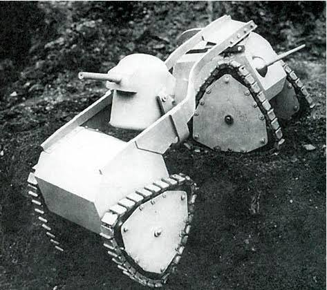

What exactly makes a tank experimental?
During the First World War, military engineers explored a variety of armoured vehicle designs, many of which never reached the battlefield. Some were built and tested but ultimately abandoned, while others underwent substantial modifications before entering service. The distinction between an experimental tank, an unsuccessful prototype, and an unrealised concept is not always clear.
Explore Experimental Tanks!
Discover the unusual designs, ambitious engineering projects, and forgotten prototypes of the First World War!
Explore the Tanks
Tsar Tank
The Tsar Tank was a combat vehicle developed by Nikolai Lebedenko in the Russian Empire between 1914 and 1915. Strictly speaking, the vehicle was not a tank in the conventional sense of the term, but rather a wheeled combat vehicle. The machine was constructed and tested in 1915. Following the trials, it was concluded that the vehicle was generally unsuitable for combat use, leading to the cancellation of the project. The sole prototype was left to rust for many years in the forests of the Moscow region.

Delahaye’s Tank
An unusual articulated tank was designed by French engineers Louis-Gaston Sabathé and Amédée Varlet during the First World War. As early as 1918, Amédée Varlet proposed a design for a “tracked vehicle” that could be used as an “assault tank”. Unlike other similar designs, Varlet decided to abandon the conventional configuration. In his view, a two-section articulated chassis would provide the best mobility over rough terrain. Details of the proposed armament have not survived.
